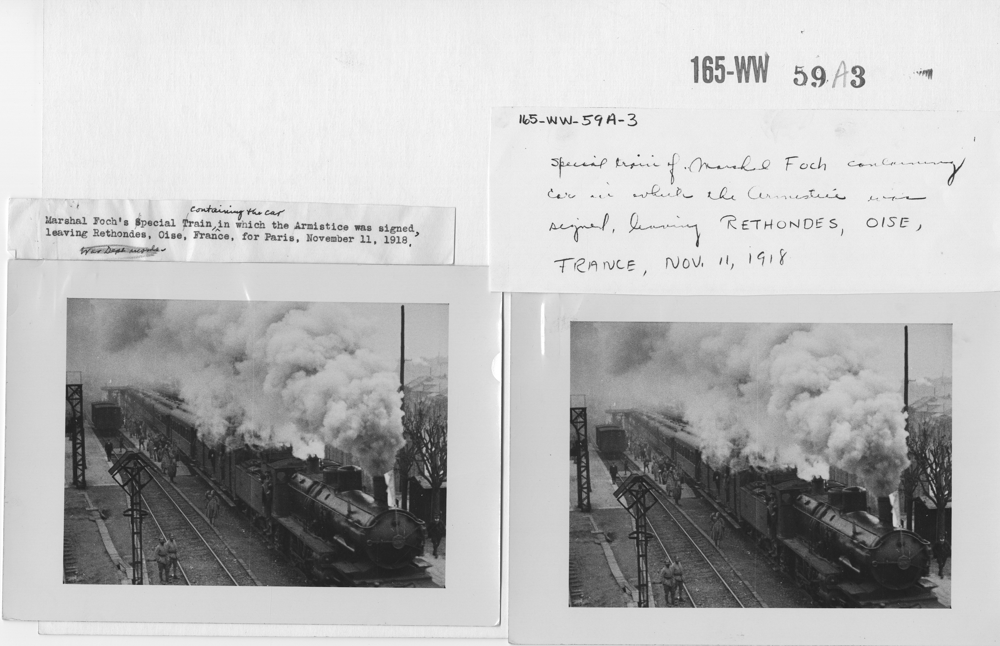

The Great War in Focus
World War One reshaped nations, societies, and daily life. In just four years, it introduced trench warfare, mechanized artillery, and a scale of mobilization never seen before.
From the assassination of Archduke Franz Ferdinand to the armistice of November 1918, this page explores the major events and human stories that defined the war.
